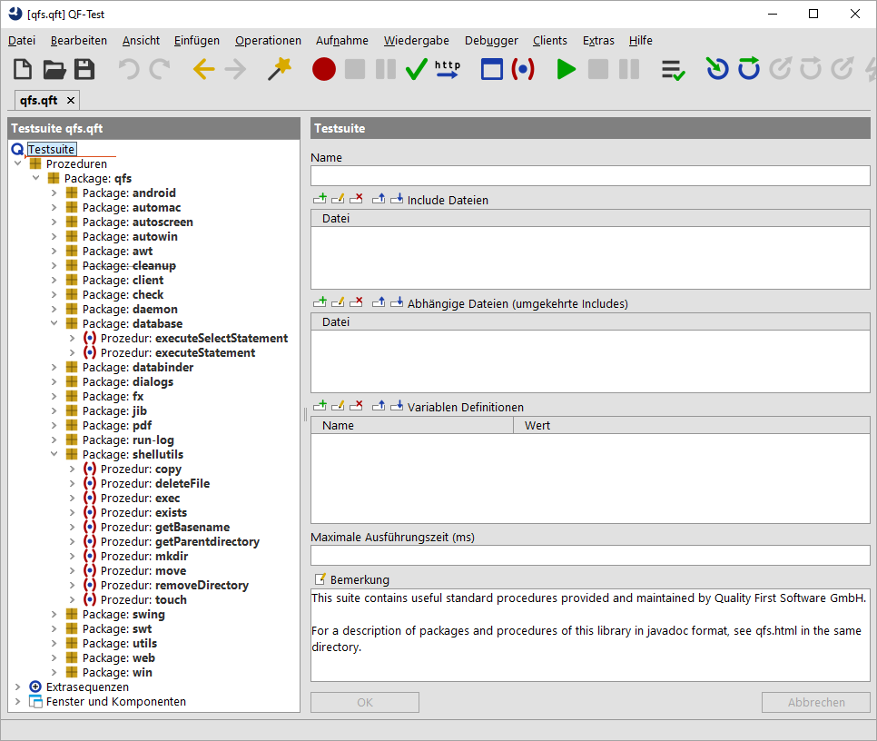

| Version 6.0.3 |
Die Standardbibliothek qfs.qft, eine Testsuite mit vielen hilfreichen
Prozeduren für unterschiedliche Aufgaben, ist Teil der QF-Test Distribution.
|
|  | ||
|
| Abbildung 10.1: Standardbibliothek qfs.qft | ||
Unter anderem gibt es Prozeduren zum generischen Ansteuern und Prüfen von Komponenten (AWT, Swing, JavaFX, SWT, Web), für den Zugriff auf Dateisysteme und Datenbanken, das Schreiben von Text oder Bildschirmabbildern in Protokoll und Report sowie Aufräummechanismen.
Die vollständige Beschreibung aller Packages und Prozeduren, inklusive Parameter und Rückgabewerte, finden Sie in der HTML Dokumentation, die auch über das »Hilfe« Menü in QF-Test erreichbar ist. Zusätzlich ist die jeweils neueste Version online verfügbar.
qfs.qft wird standardmäßig in jeder neu erzeugten Testsuite inkludiert. Da das
Verzeichnis der Suite immer im Bibliothekspfad
enthalten ist, reicht qfs.qft ohne weitere Pfadangabe in den
'Include Dateien' des 'Testsuite' Knotens aus.
Hinweis Alle Prozeduren, die sich auf ein SUT beziehen, nutzen die generische Variable
$(client) als impliziten Parameter. Stellen Sie sicher, dass diese Variable
korrekt gesetzt wird, entweder global, lokal oder als expliziter Parameter im
Prozeduraufruf.
| Letzte Änderung: 6.9.2022 Copyright © 1999-2022 Quality First Software GmbH |